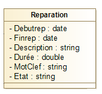
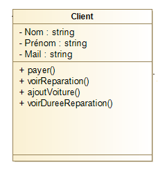
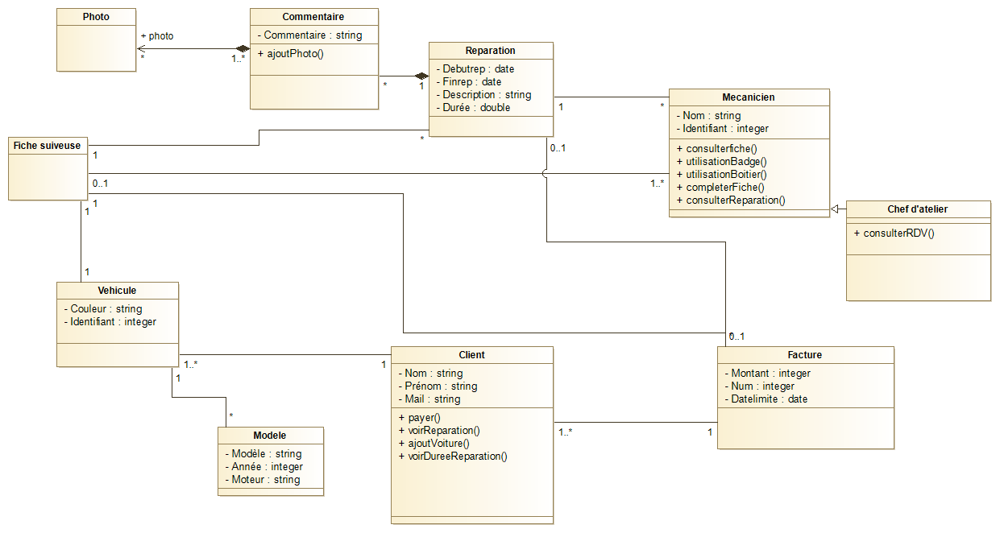

Modélisation du domaine - Approfondissement
Rappel
Un diagramme de classe est composé de classes et de relations, il existe plusieurs types de relations :
Relation bidirectionnelle : permet l'accessibilité aux deux classes qui sont reliés entre elles.
Relation unidirectionnelle : permet l'accessibilité à seulement une des classe qui possède cette relation.
Relation d'agrégation : relation forte permet de rendre important une classe par rapport à une autre.
Relation de composition : relation très forte permet de rendre important une classe à une autre et si la classe importante disparaît alors l'autre également.Les cardinalités permettent de représenter le nombre minimum et maximum d'instances qui sont autorisées à participer à la relation. Les cardinalités sont représentés par des nombres donnant le nombre minimum et le nombre maximum présentés à chaque extremité de l'association.
Avancement du diagramme de classe
- Une réparation peut être commencée à une date donnée et terminée à une date donnée. Tant qu'elle n'est pas commencée, il n'y a pas de date de début, de même tant qu'elle n'est pas finie, il n'y a pas de date de fin. Une durée est associée à une réparation terminée. Il est possible de calculer le temps maximum passé sur une réparation (temps entre le début et la fin de la réparation); c'est le temps par défaut pour la durée de la réparation, lorsque la durée de la réparation n'est pas renseignée.
Un client qui demande où en est la réparation de sa voiture est averti :
2. que sa voiture est réparée, si toutes les réparations associées à sa fiche suiveuse en cours sont terminées, dans ce cas, il peut connaitre le temps passé sur sa voiture;
3. que la facture est prête, ce qui n'est possible que si toutes les réparations ont été faîtes;
4. que les réparations sont en cours ou n'ont pas encore commencées.
Cas 1 : On va ajouter en attribut un début de réparation notée "debutrep" ,une fin de réparation notée "finrep" et une durée. On va donc avoir ceci :

Cas 2 : On va ajouter deux méthodes permettant de voir la durée et de voir les réparations dans client car c'est lui qui a la possibilité de faire ceci. On aura donc :

Cas 3 et 4 : on a rien à changer car client est associé à facture ainsi que réparation donc il peut voir si les réparations sont en cours ou n'ont pas encore commencées ainsi que si la facture est prête.
Le diagramme de classe final sera donc comme ceci :

Erreur à ne pas commetre
Chaque rôle n'est pas une classe, ça serait une erreur de mettre des rôles qui n'agissent pas en tant que classe dans un diagramme de classe.